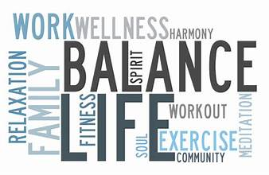

Maintain a Healthy Work-Life Balance:
Maintaining a healthy work-life balance is a fundamental aspect of overall well-being and long-term success. It entails a conscious effort to strike a harmonious equilibrium between the demands of one's career and personal life. This balance is essential for physical and mental health, as it helps prevent burnout, reduce stress, and improve overall quality of life.
In today's fast-paced and highly connected world, the boundaries between work and personal life have become increasingly blurred. However, it's crucial to recognize that overextending oneself in the pursuit of professional success can have detrimental effects on health, relationships, and job performance. When individuals prioritize self-care, leisure, and time spent with loved ones, they often find themselves more energized, motivated, and creative when it comes to their work.

A healthy work-life balance allows for relaxation, recreation, and personal development, all of which are critical for maintaining mental and emotional resilience. It also fosters stronger relationships, as it provides the opportunity to connect with family and friends, thereby enhancing social and emotional well-being.
In essence, maintaining a healthy work-life balance is not a luxury but a necessity. It is a conscious choice to allocate time and energy to all aspects of life, ensuring that personal and professional pursuits can coexist in harmony. Those who prioritize this balance often find that they are not only more successful in their careers but also happier and healthier individuals overall.
A healthy work-life balance also promotes long-term sustainability in one's career. Overworking, constantly being on call, and neglecting personal time can lead to burnout, decreased job satisfaction, and a reduced capacity for innovation. On the other hand, individuals who prioritize balance tend to be more productive during their working hours, as they approach tasks with renewed focus and energy. They are better equipped to tackle challenges, make sound decisions, and contribute to their organizations' success.
Additionally, maintaining a healthy work-life balance is crucial for personal growth and self-fulfillment. It allows individuals to pursue their passions, hobbies, and interests outside of their professional roles. This diverse range of experiences contributes to personal development, creativity, and a broader perspective on life.
In a broader context, organizations that encourage and support work-life balance among their employees often experience increased productivity, reduced turnover, and a more positive company culture. It's a win-win situation for both employees and employers, as a balanced and content workforce tends to be more loyal, engaged, and committed to their organization's goals.

In conclusion, the pursuit of a healthy work-life balance is not just a personal choice but a strategy for sustainable success and well-being. It is an investment in both one's immediate happiness and long-term growth, and it contributes positively to the overall health and vitality of individuals and the organizations they are a part of.